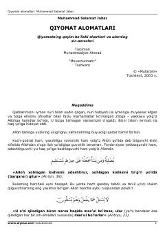

QAQiyomatning yaqinlashuvi va uning shartlari haqida diniy-ma'rifiy risola.
Mazkur kitobda Qiyomatning qoyim bo'lish shartlari, uning yaqinlashib qolganini bildiruvchi alomatlar va ularning sir-asrorlari Qur'on oyatlari hamda hadislar asosida bayon etilgan. Muallif Islom ta'limotiga ko'ra oxirzamon alomatlarini atroflicha tahlil qilib, kitobxonga diniy-ma'rifiy tushunchalar beradi.